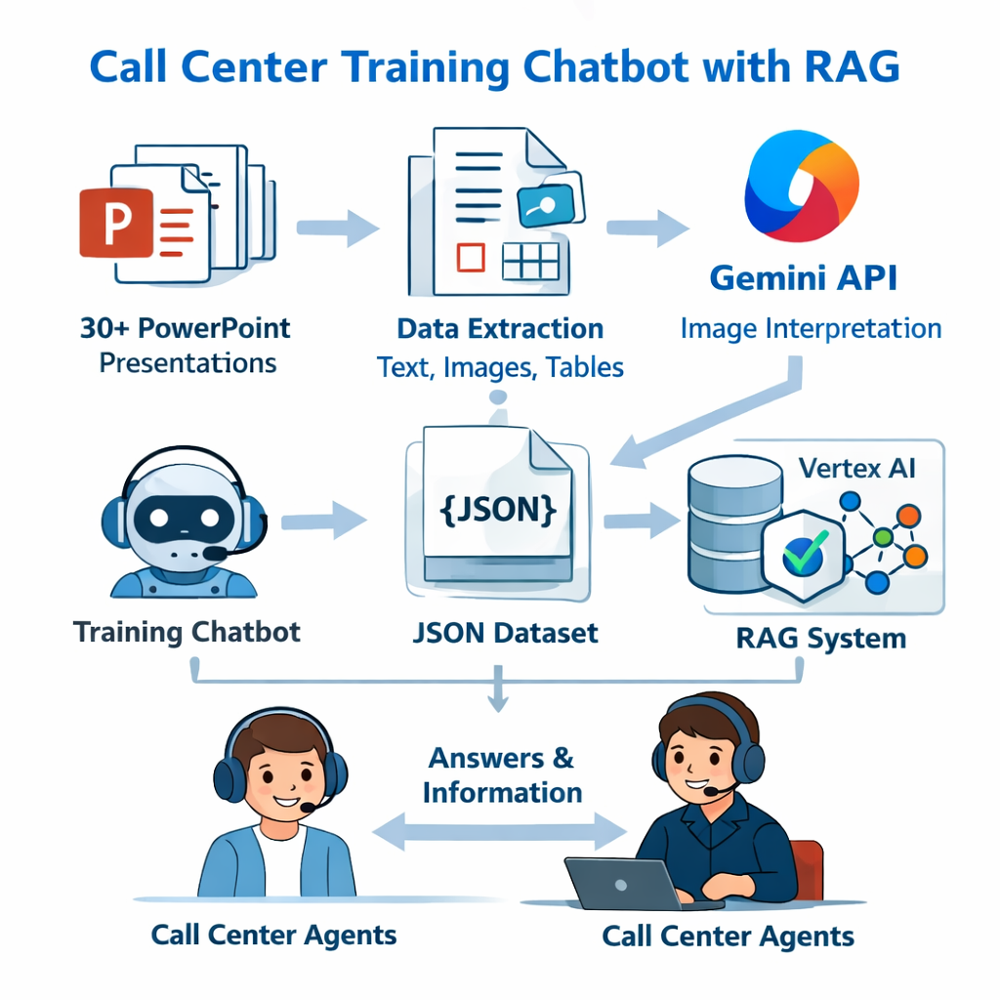

Telecom provider · Sr Data Scientist · 2026
Call Center Training Chatbot with RAG
The knowledge needed to train call center agents was spread across 30+ PowerPoint decks full of text, tables and images. I turned it into one conversational, searchable source.
30+
training decks ingested
3
content types: text, tables, images
Gemini
describes every image
1
searchable chatbot replaces scattered decks
01Problem
Training content lived in 30+ presentations. Finding an answer meant opening decks one by one, and a lot of the knowledge was inside images and tables that plain text search cannot read.
02Approach
- Extractpython-pptx pulls text, tables and images from every deck into structured JSON.
- Describe imagesImages are Base64-encoded and described by a multimodal model through the Gemini API.
- MergeThe descriptions are written back into the JSON next to their slide.
- IndexThe corpus is created in Vertex AI as the chatbot's knowledge source.
- ChatAgents ask questions and get answers grounded in the training material (RAG).
03Impact
- A centralized, searchable resource replacing 30+ scattered training documents
- Knowledge hidden in images and tables becomes searchable
- Agents get conversational access to training content
04Visuals
